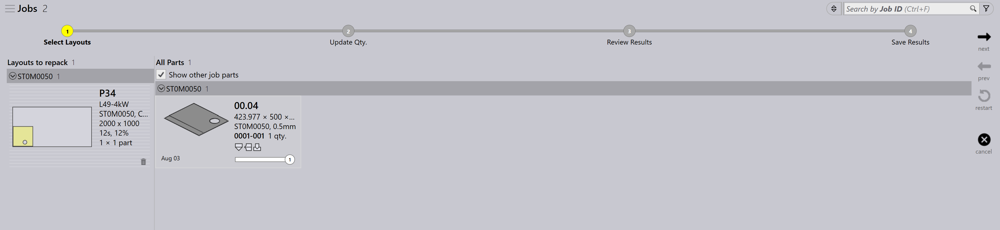

Herverpakken
TruSmartCAM heeft geen afzonderlijke module voor herverpakken. In plaats daarvan wordt herverpakken afgehandeld via opties op jobniveau die flexibiliteit bieden in de manier waarop onderdelen worden gecombineerd.
Er zijn drie manieren om te herverpakken.
-
Herverpakken met Mix parts from multiple Jobs.
-
Handmatig herverpakken met de interactieve wizard Add Parts.
-
Handmatig herverpakken met TecZone.
Herverpakken met mix parts from multiple Jobs
-
Om deze optie in te schakelen gaat u naar factory → settings → Job → Nest settings → Mix parts from multiple Jobs.

-
Wanneer deze optie is ingeschakeld, kunnen onderdelen uit verschillende jobs tijdens automatisch nesten of interactief nesten worden gegroepeerd, wat resulteert in een gecombineerde verpakking of nesting.
-
Bijvoorbeeld:
-
Job-1 heeft 1 onderdeel, Job-2 heeft 1 onderdeel.
-
Wanneer Mix parts from multiple Jobs is ingeschakeld, kan TruSmartCAM deze 2 onderdelen herverpakken tot één geoptimaliseerd nest.
-


-
Zonder deze optie blijven onderdelen uit elke job tijdens het nesten/verpakken gescheiden met verschillende lay-outnamen.
-
Herverpakken kan ook handmatig worden uitgevoerd zonder deze optie in te schakelen.
Handmatig herverpakken met de interactieve wizard Add Parts
-
Selecteer in de lay-outweergave de onderdelen die u wilt herverpakken.
-
Klik met de rechtermuisknop op het onderdeel en kies Add Parts… in het lay-outpaneel.

-
Volg de aanwijzingen in de wizard om het herverpakproces te voltooien.
-
Kies Show other job parts en voeg ze toe aan de huidige job.

-
Beoordeel de wijzigingen en bevestig het herverpakken.

Zie voor meer informatie Add Parts.
Handmatig herverpakken met TecZone
-
Open TecZone door te klikken op
 .
.

-
Klik in de TecZone-interface op Add.

-
Er verschijnt een nieuw venster waarin u de onderdelen kunt selecteren die moeten worden herverpakt. Klik op Show… en selecteer vervolgens Other job parts. Klik na uw selectie op Pick.

-
Er verschijnt een nieuw venster waarin u kunt bepalen waar het onderdeel moet worden herverpakt.
-
Klik op Save changes to TruSmartCAM en de herverpakte lay-out is beschikbaar in TruSmartCAM.